01 — El problema
El email era el portal
Cuando empecé a investigar para este proyecto, la pregunta era sencilla: ¿cómo mejoramos el portal del alumno de ENAE Business School?
La respuesta que encontré fue más incómoda: el portal no era el problema. El email era el portal.
Los alumnos enviaban correos para pedir certificados. Para saber el estado de su matrícula. Para preguntar sus notas. Para entender qué tenían que hacer el primer día de clase. El equipo de administración contestaba esos correos. Y así, día tras día, la experiencia del alumno dependía de la velocidad de respuesta de una bandeja de entrada.
"Los alumnos —especialmente los internacionales— sentían desorientación al inicio del curso, incapacidad para resolver trámites de forma autónoma, y una sensación de aislamiento agravada por la falta de canales de comunicación ágiles."
ENAE Business School atiende a un perfil de alumno internacional, diverso y frecuentemente con cargas laborales y familiares simultáneas. El portal existente generaba fricciones que repercutían tanto en la experiencia del alumno como en la carga operativa del equipo administrativo.
La oportunidad era doble: mejorar la retención y satisfacción del alumno, y liberar recursos internos mediante la digitalización de procesos repetitivos.
02 — Objetivos
Qué debía resolver
+60%
Tasa de autogestión
Trámites resueltos sin contacto con administración en 6 meses
−40%
Reducción de emails
Volumen de correos administrativos en el primer trimestre
<90s
Time-on-task
Tiempo promedio para completar una tarea clave
>85%
Task completion rate
Tasa de éxito en pruebas de usabilidad
>75
SUS Score
System Usability Scale post-testing
>70%
Onboarding completado
Alumnos nuevos que completan el flujo de bienvenida
Nota: Al tratarse de un proyecto académico, los KPIs son propuestos como métricas de éxito recomendadas para una futura implementación, no resultados post-lanzamiento.
03 — Benchmark
Primero, ver qué hace el sector
Antes de hablar con usuarios, analicé un total de 10 escuelas de negocio y su presencia digital — páginas web, portales del alumno y plataformas de empleo — para identificar buenas prácticas, patrones comunes y oportunidades que el sector todavía no estaba resolviendo.
Lo que funciona en el sector
—Hero section impactante con CTA claros desde el primer scroll (ESADE, ESIE, IESE)
—Buscador visible para acceder rápido a la oferta formativa (IEBS, EAE)
—Datos y rankings como elemento de confianza inmediata (IESE, OBS, EAE)
—Portal del alumno con bloques por iconos y colores — reduce la curva de aprendizaje (UMU)
—Diseño completamente responsive y adaptado a móvil (CEF, ESADE)
Lo que falta en el sector
—Ningún portal integra gestión académica y administrativa en un único entorno
—El autoservicio brilla por su ausencia — todo lleva a un formulario de contacto
—La empleabilidad aparece enterrada en submenús, sin protagonismo
—No hay onboarding para alumnos nuevos ni guías de integración
—Visibilidad del estado de trámites: inexistente en todos los casos analizados
Análisis por escuela
Cada escuela fue analizada de forma individual evaluando su web, portal del alumno y plataforma de empleo. Estas son las páginas del estudio de benchmarking:
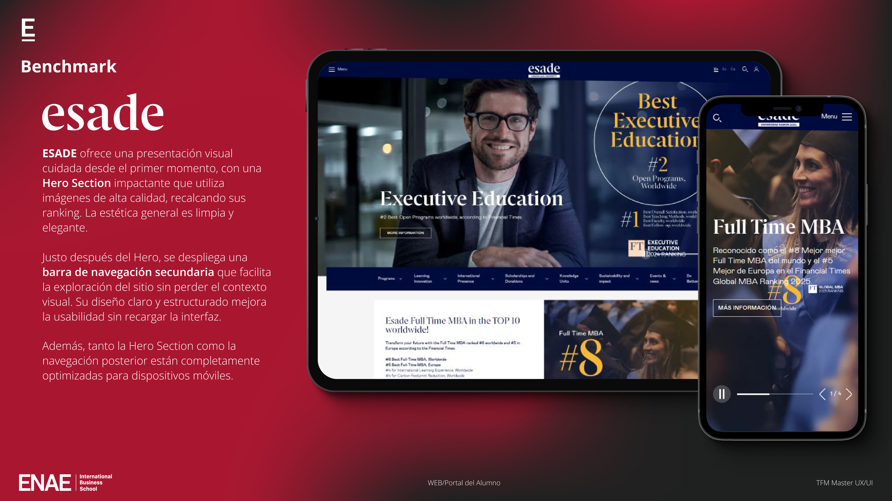
ESADE — Hero section impactante, navegación secundaria clara y diseño responsive
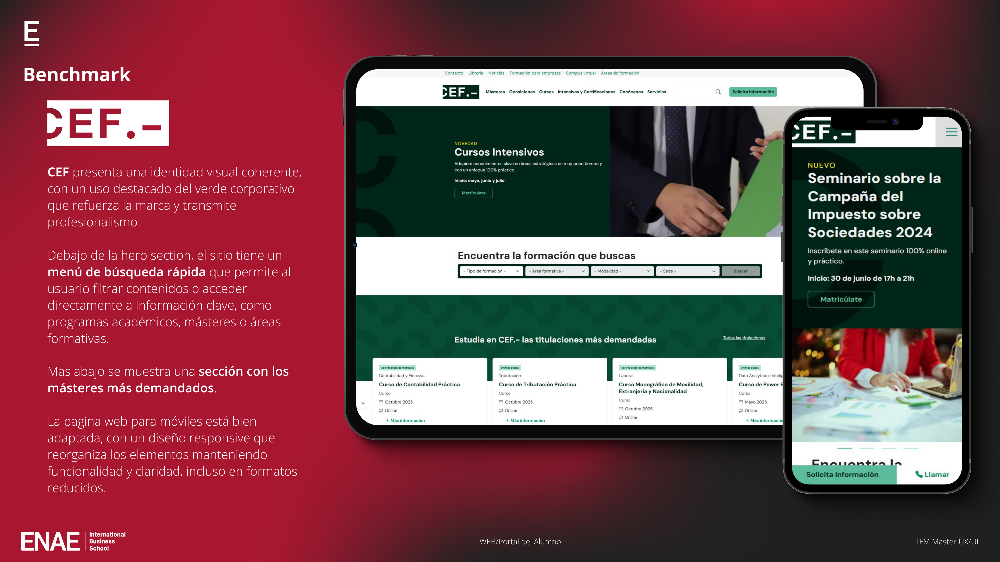
CEF — Identidad visual corporativa coherente, menú estructurado debajo del hero
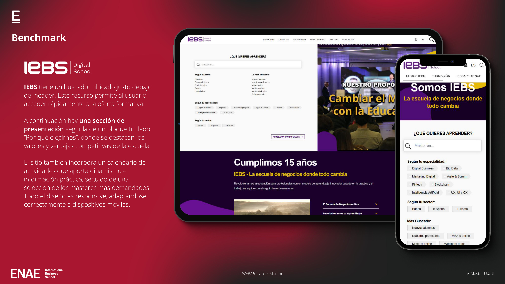
IEBS — Buscador visible bajo el header para acceso rápido a la oferta formativa
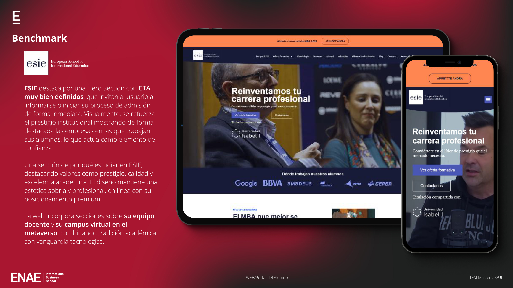
ESIE — Hero section con CTAs muy bien definidos e inmediatos, refuerzo de prestigio
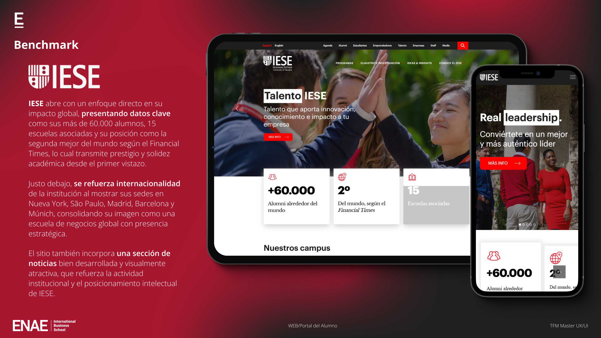
IESE — Datos de impacto global desde el primer scroll (60.000 alumnos, rankings FT)
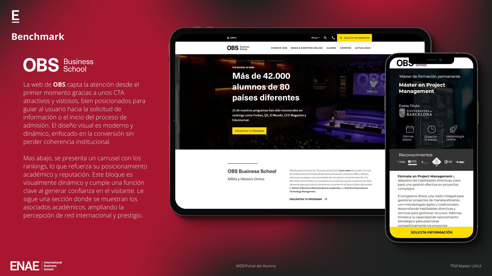
OBS — CTAs vistosos y bien posicionados para guiar al usuario hacia la solicitud de info
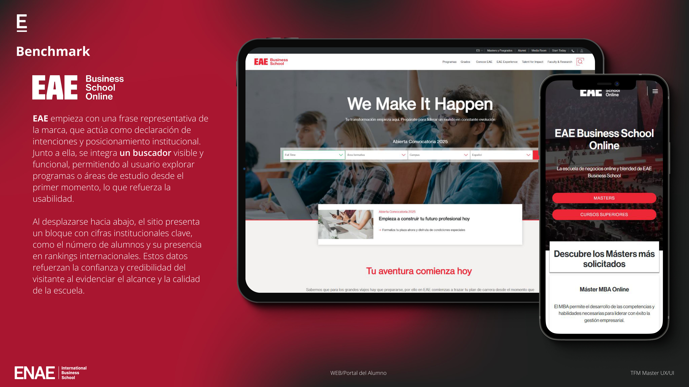
EAE — Declaración de marca como apertura + buscador integrado y visible
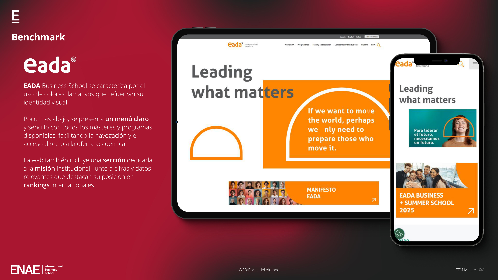
EADA — Colores corporativos llamativos, menú claro con toda la oferta de másteres
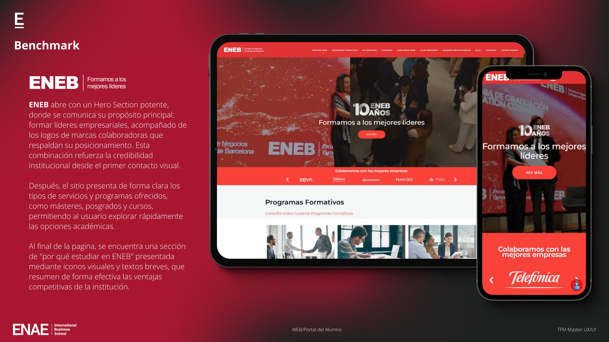
ENEB — Hero potente con propósito de marca + logos de empresas colaboradoras
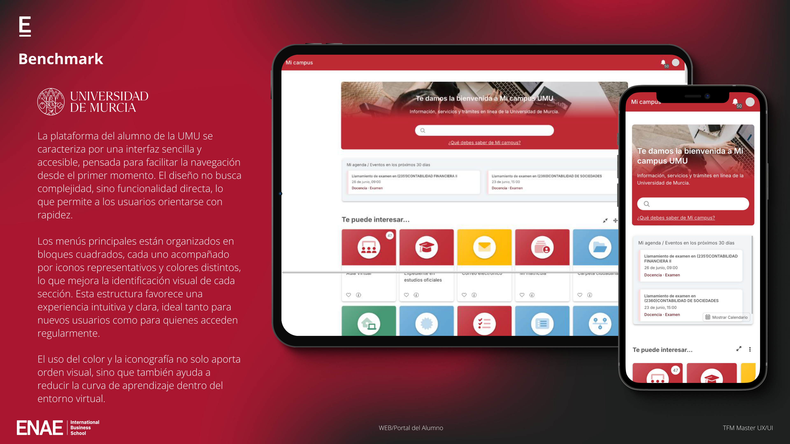
UMU — Portal del alumno con bloques por iconos y colores, diseño accesible y sin complejidad
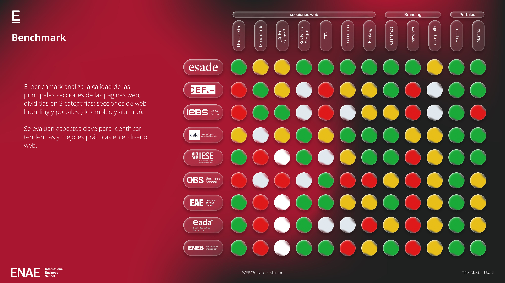
Resumen comparativo — evaluación de las secciones clave: web, branding, portal del alumno y empleo
Ningún portal académico analizado resuelve de forma eficiente el salto entre lo académico y lo administrativo dentro de un mismo entorno. Esa brecha es la principal oportunidad de diferenciación del Portal del Alumno.
04 — Encuestas
54 respuestas que cuantificaron la fricción
La encuesta se lanzó exclusivamente a alumnos con el objetivo de entender sus motivaciones al elegir un máster y las frustraciones que encuentran en los procesos administrativos y digitales de la escuela.
54
Respondentes
Exclusivamente alumnos actuales y recientes
25–34
Rango de edad
Franja más representada en la muestra
PC/Mac
Dispositivo principal
Aunque el móvil emerge como secundario clave
Vídeo
Formato preferido
Videos cortos por encima de artículos y podcast
¿Qué valoran al elegir un máster?
El plan de estudios y la metodología son los factores más valorados — muy por encima del precio o el ranking. Esto tiene implicaciones directas en cómo debe presentarse el contenido del portal: el alumno ya ha tomado la decisión de estudiar; ahora necesita que el portal le ayude a gestionar, no a convencerle.
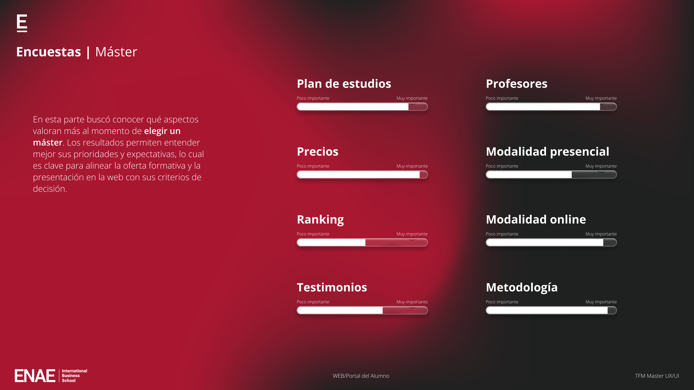
Valoración de aspectos al elegir un máster — resultados de la encuesta (n=54)
Frustraciones en procesos administrativos
Las áreas con mayor insatisfacción son las que requieren interacción con administración: atención académica, solicitud de documentos y comunicación con profesores. El acceso al calendario y la visualización de calificaciones también muestran niveles bajos de satisfacción — señales claras de los puntos donde el portal tiene que mejorar.
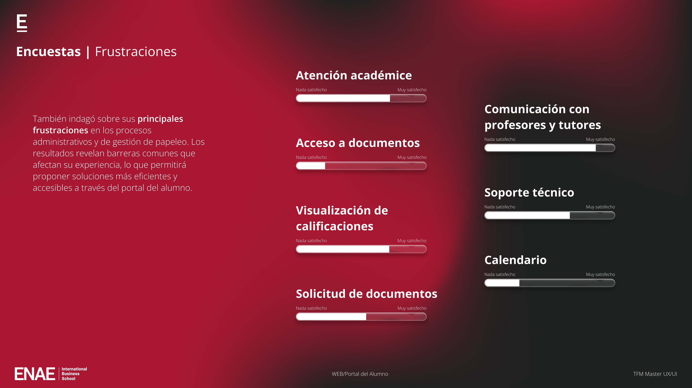
Niveles de satisfacción en procesos administrativos — de "nada satisfecho" a "muy satisfecho"
La encuesta confirma que las fricciones no están en el contenido académico, sino en la capa administrativa: pedir un documento, saber cuándo llega, comunicarse con quien corresponde. Exactamente lo que el portal no resuelve hoy.
05 — Entrevistas
10 conversaciones que cambiaron el brief
Se entrevistó a 10 personas: 8 alumnos que habían finalizado su máster y 2 miembros del equipo administrativo de la escuela. Incluir la visión del personal fue una decisión clave — el problema del email afecta a ambos lados.
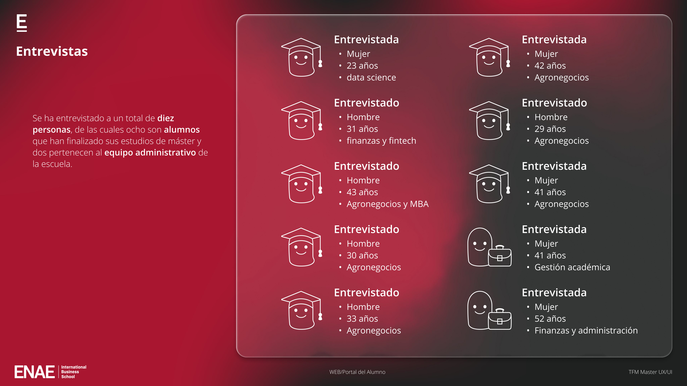
Perfiles entrevistados — 8 alumnos y 2 personas del equipo administrativo
Qué dijeron los alumnos
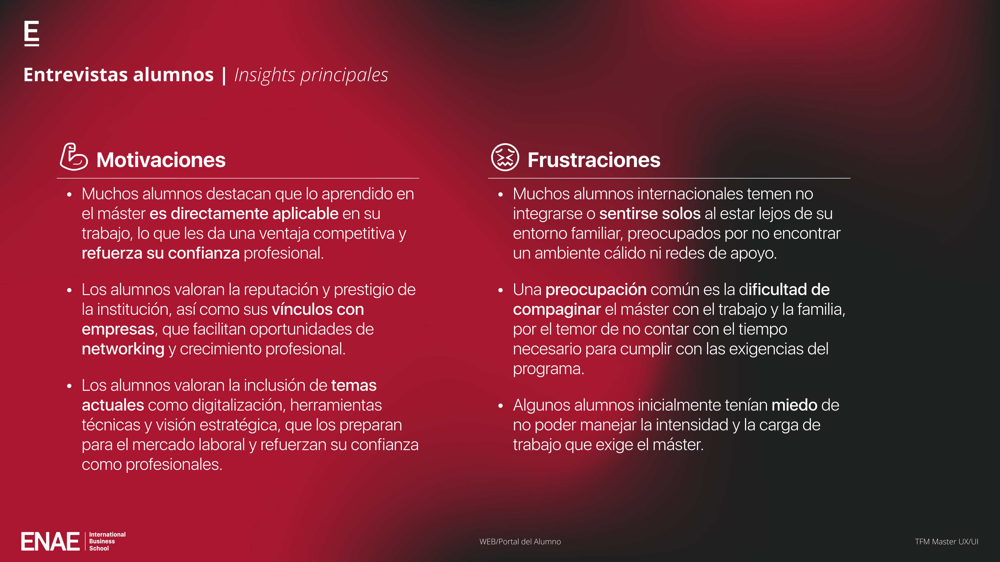
Insights principales de las entrevistas a alumnos — motivaciones y frustraciones
💼
Lo aprendido es directamente aplicable — eso genera confianza
Muchos alumnos destacan que el contenido del máster tiene impacto inmediato en su trabajo. La reputación de la institución y sus vínculos con empresas refuerzan la motivación. El portal debe reflejar ese valor, no enterrarlo en formularios.
😰
El miedo a no integrarse — especialmente en perfiles internacionales
Los alumnos internacionales expresaron miedo real a sentirse solos, no entender los procesos y no encontrar un entorno de apoyo. Este hallazgo transformó el brief: el portal no es solo un gestor de tareas, es un sistema anti-ansiedad para el primer mes.
⏱
El tiempo es el recurso más escaso
Perfiles que combinan trabajo y familia señalaron que perder tiempo en gestiones que "deberían ser automáticas" es una de sus principales frustraciones. Cada clic innecesario tiene un coste real en la vida de estas personas.
Qué dijeron desde administración
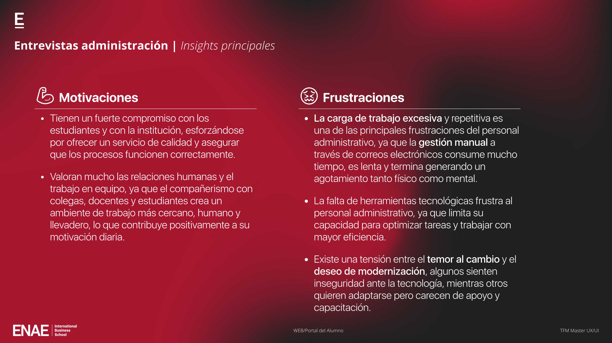
Insights del equipo administrativo — motivaciones y frustraciones desde el otro lado
📧
La carga de email es agotadora — y evitable
La gestión manual a través de correos consume tiempo, es lenta y genera agotamiento. El equipo administrativo tiene un fuerte compromiso con los estudiantes, pero las herramientas no les permiten hacer su trabajo con eficiencia. El portal tiene que liberar ese tiempo.
🔧
Falta de herramientas tecnológicas actualizadas
El equipo señala la falta de sistemas integrados como una barrera para ofrecer un servicio ágil. No es falta de voluntad: es falta de infraestructura. El portal puede resolver esto por ambas partes al mismo tiempo.
El mismo problema — la dependencia del email — frustra a los alumnos porque los hace esperar, y frustra al equipo administrativo porque los obliga a repetir. Una buena solución resuelve los dos lados a la vez.
06 — User Personas
¿Para quién diseñamos?
Las entrevistas y encuestas dieron lugar a tres user personas que representan los patrones más relevantes de uso. No son perfiles demográficos: son retratos de motivaciones, miedos y necesidades reales identificadas en la investigación.
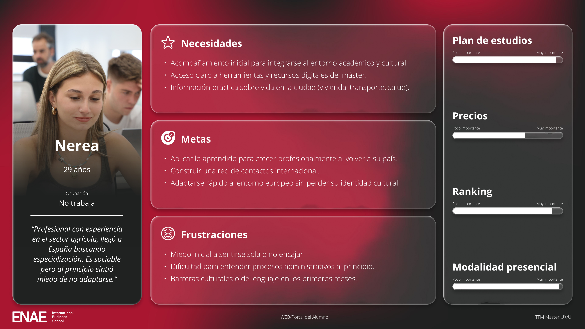
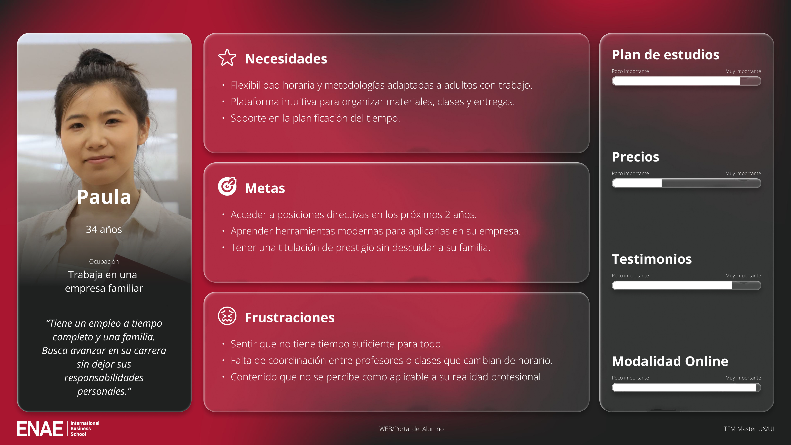
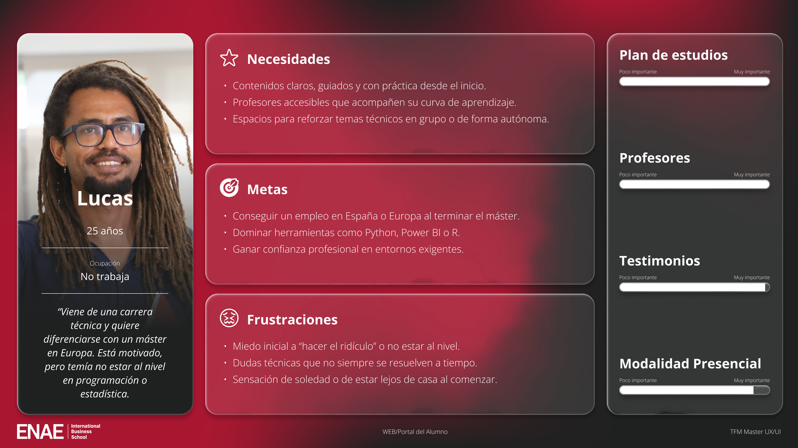
User Personas — Nerea, Paula y Lucas (basadas en entrevistas reales)
Persona 01
Nerea
29 años · No trabaja
Profesional con experiencia en el sector agrícola, llegó a España buscando especialización. Sociable pero con miedo inicial a no adaptarse al entorno europeo.
Necesita
Acompañamiento inicial · Acceso claro a recursos · Información práctica sobre la ciudad
Le frena
Miedo a sentirse sola · Barreras culturales · Procesos administrativos opacos
Persona 02
Paula
34 años · Trabaja a jornada completa
Trabaja en una empresa familiar y tiene familia. Busca avanzar en su carrera sin dejar sus responsabilidades personales. El tiempo es su recurso más escaso.
Necesita
Flexibilidad horaria · Plataforma intuitiva · Soporte en planificación del tiempo
Le frena
Sensación de no tener tiempo · Falta de coordinación · Contenido no aplicable a su realidad
Persona 03
Lucas
25 años · No trabaja
Viene de una carrera técnica y quiere diferenciarse con un máster en Europa. Motivado, pero con miedo a no estar al nivel en programación o estadística.
Necesita
Contenidos guiados · Profesores accesibles · Espacios para reforzar temas técnicos
Le frena
Miedo a "hacer el ridículo" · Dudas técnicas sin resolver · Sensación de soledad
07 — Customer Journey
El recorrido completo del candidato
El Customer Journey Map recoge las 5 fases que atraviesa el candidato desde que decide que quiere hacer un máster hasta que toma la decisión de inscribirse. Cada fase tiene sus propias fricciones, emociones y oportunidades de diseño.
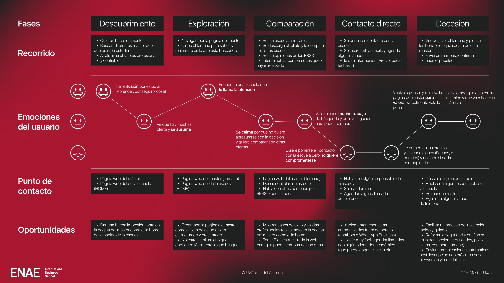
Customer Journey Map — emociones y puntos de fricción en cada fase del proceso
| Fase |
Qué hace el candidato |
Emoción dominante |
Oportunidad |
| Descubrimiento |
Busca másteres, analiza si la web es profesional y confiable |
Ilusión + incertidumbre |
SEO, Hero section con CTA claros, branding diferenciador |
| Exploración |
Navega por el máster, lee el temario, evalúa si es lo que busca |
Curiosidad + duda |
Página del máster jerarquizada, contenido visual, buenos CTA |
| Comparación |
Busca escuelas similares, descarga folleto, busca opiniones en RRSS |
Análisis + desconfianza |
Datos de empleabilidad, testimonios reales, ranking visible |
| Contacto |
Se pone en contacto, intercambia mails, agenda una llamada |
Expectativa + impaciencia |
Chat IA, WhatsApp, formulario simple, respuesta en <10 min |
| Decisión |
Vuelve a ver el temario, piensa en los beneficios, hace el papeleo |
Resolución + algo de miedo |
Mensaje "te acompañamos desde hoy", reserva sin pago inicial |
El mayor abandono ocurre entre la fase de contacto y la decisión. El candidato necesita que alguien o algo le acompañe en ese último tramo — no un formulario más.
08 — Insights y Afinidad
Sintetizar para encontrar el patrón
Una vez recogidos los datos de encuestas, entrevistas y benchmark, los agrupé por fases del journey para identificar qué problemas aparecen en cada momento y qué soluciones puede aportar el portal.
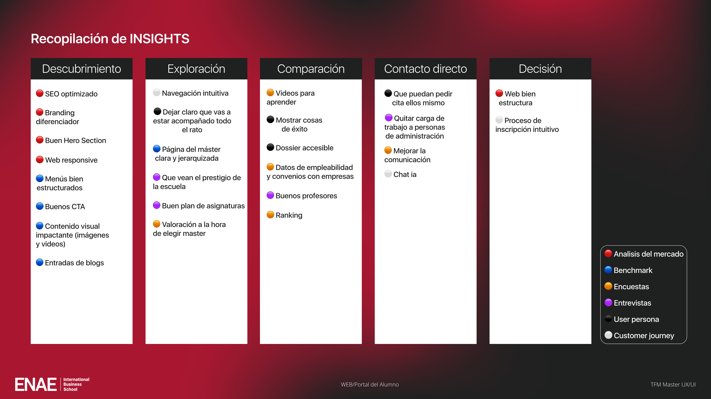
Mapa de afinidad — insights organizados por fase del Customer Journey
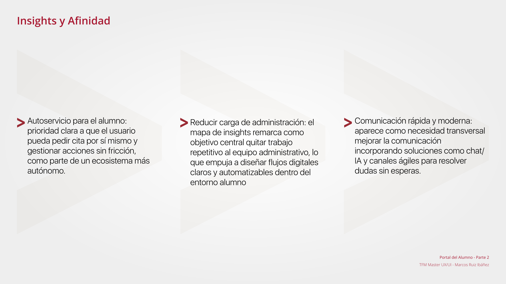
Síntesis visual de hallazgos — agrupación por categorías de necesidad
Las preguntas que los insights respondieron
¿Cómo capta la atención de quien aún no ha decidido estudiar?
Mediante contenido educativo bien posicionado en Google — blogs, vídeos que respondan dudas como "qué máster elegir" o "cuáles tienen más salidas laborales".
¿Qué canales de contacto son imprescindibles hoy?
Chat IA, WhatsApp, formulario de contacto y opción de agendar llamada. El usuario quiere resolver dudas rápido — no esperar 48 horas una respuesta por email.
¿Cómo ayuda la web a que el usuario elija esta escuela frente a la competencia?
Comparativas claras, visibilidad de becas y financiación, empleabilidad demostrada con datos concretos, testimonios reales y acreditaciones visibles.
01
Organización por objetivos, no por departamentos
Los alumnos agrupan el portal según sus tareas reales, no según la estructura interna de la universidad.
02
El autoservicio es una necesidad, no un deseo
Cada flujo administrativo debe ser completable sin contactar a nadie.
03
La ansiedad del primer día es transversal
El onboarding debe ser un módulo central, no un texto de bienvenida.
04
La visibilidad del estado genera confianza
El alumno necesita saber qué ocurre con cada solicitud en tiempo real.
05
Las notificaciones son una capa transversal
No deben ser una sección: deben estar presentes en todo el sistema.
06
La empleabilidad tiene valor estratégico percibido
Merece sección propia, no estar enterrada en submenús.
09 — Brainstorming retos e ideas
Un reto por fase, varias ideas por reto
Con los insights organizados por fase del journey, hice un ejercicio de brainstorming estructurado: para cada reto identificado en cada fase, generé ideas concretas de solución — sin filtrar todavía por viabilidad.
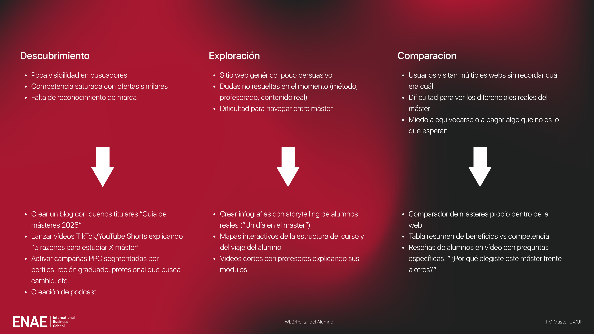
Brainstorming organizado por fases del Customer Journey — retos vs. ideas de solución
Descubrimiento
Reto: poca visibilidad y marca poco diferenciada
Blog con titulares optimizados ("Guía de másteres 2025") · Vídeos cortos en TikTok/YouTube · Campañas PPC segmentadas por perfil · Podcast institucional
Exploración
Reto: sitio web genérico, dudas no resueltas
Infografías con storytelling de alumnos reales · Mapas interactivos de la estructura del curso · Vídeos cortos de profesores explicando sus módulos
Contacto directo
Reto: formulario largo, asesoría lenta y poco personalizada
Chatbot que clasifica dudas y agenda llamadas · WhatsApp con asesores reales (<10 min de respuesta) · Formulario inteligente que empieza con 2 campos · Botón fijo "Habla con un orientador ahora"
Decisión
Reto: abandono antes de inscribirse, miedo a pagar sin garantías
Página de decisión con mensaje "Te acompañamos desde hoy" · Reserva de plaza sin pago inicial · Contador real de plazas disponibles · Vídeo del director dando la bienvenida
10 — Matriz Atractivo-Esfuerzo
Priorizar: qué tiene más impacto con menos esfuerzo
Con todas las ideas del brainstorming sobre la mesa, las situé en una matriz de atractivo vs. esfuerzo para identificar qué implementar primero. El objetivo era separar las "quick wins" de las apuestas a largo plazo.
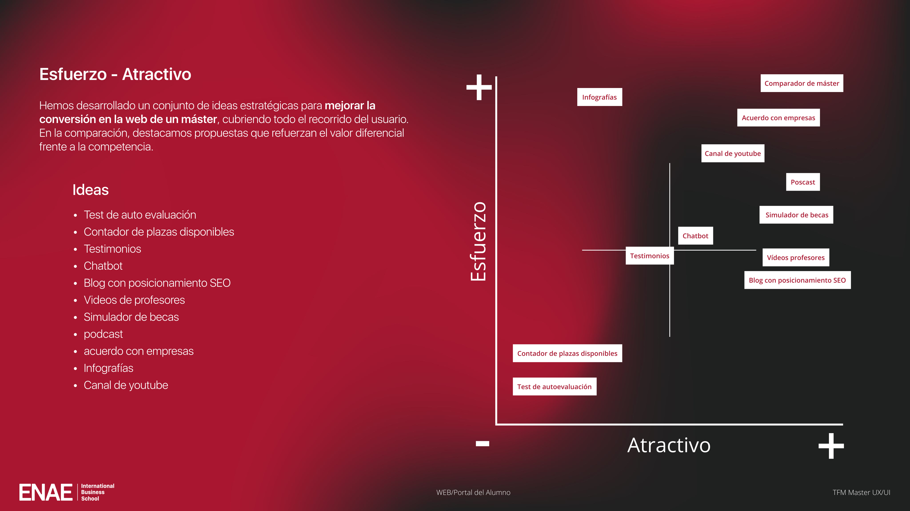
Matriz Atractivo-Esfuerzo — priorización de ideas generadas en el brainstorming
Alto atractivo · Bajo esfuerzo
Empezar aquí
— Contador de plazas disponibles
— Testimonios reales de alumnos
— Test de autoevaluación de perfil
Alto atractivo · Alto esfuerzo
Planificar a medio plazo
— Chatbot inteligente
— Blog con SEO posicionado
— Simulador de becas
— Acuerdos con empresas
Bajo atractivo · Bajo esfuerzo
Ejecutar si hay tiempo
— Infografías de programa
— Comparador de másteres
Bajo atractivo · Alto esfuerzo
Descartar o aplazar
— Canal de YouTube propio
— Podcast institucional
11 — Propuesta de Valor
Qué ofrece el portal que nadie más ofrece
Con toda la investigación sintetizada, definí la propuesta de valor del portal usando el Value Proposition Canvas: qué trabajos hace el alumno, qué alegrías busca y qué frustraciones tiene — y cómo el portal actúa como creador de alegrías y mitigador de fricciones.
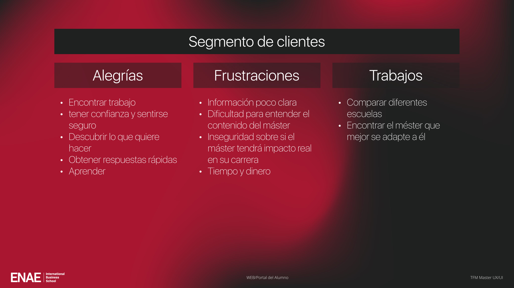
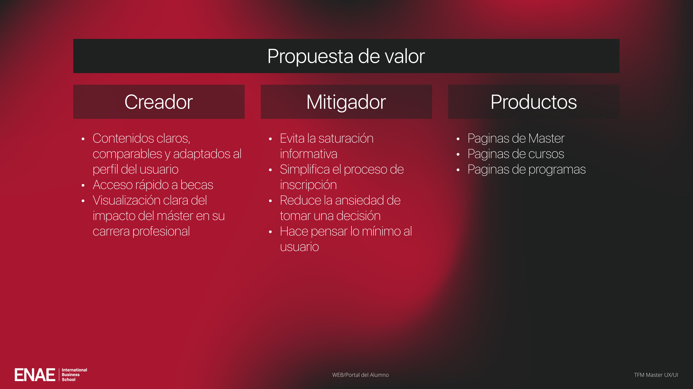
Value Proposition Canvas — segmento de cliente (izq.) y propuesta de valor (der.)
Trabajos del alumno
— Comparar escuelas y másteres
— Encontrar el que mejor se adapte
— Gestionar su vida académica sin fricción
— Obtener respuestas rápidas
Alegrías que busca
— Encontrar trabajo al terminar
— Sentirse seguro y acompañado
— Aprender y crecer profesionalmente
— Tener el control de su progreso
Frustraciones que sufre
— Información poco clara o saturada
— Inseguridad sobre el impacto real
— Procesos administrativos opacos
— Tiempo y dinero como barreras
La propuesta de valor del Portal del Alumno se resume en una frase: autonomía sin fricción. El alumno debe poder gestionar lo esencial — calificaciones, trámites, comunicación, calendario — sin depender de nadie, desde cualquier dispositivo y en menos de 5 minutos.
13 — Arquitectura de Información
Luego, estructurar
El card sorting reveló algo que ningún benchmark hubiera mostrado: los alumnos organizan el portal según sus objetivos reales de uso, no según los departamentos de la universidad. Esa diferencia parece pequeña. En arquitectura de información, lo cambia todo.
La arquitectura final responde directamente a ese hallazgo, con 7 bloques principales que responden a objetivos de uso real.
🏠 Resumen (Home/Dashboard)
Estado general
Lo más importante de hoy (pendientes)
Atajos rápidos: pagos, trámites, matrícula
Actividad reciente
🎓 Académico
Matrículas y estado de matrícula
Estado académico — notas y calificaciones
Expediente
Certificados académicos
💻 Aula Virtual
Canvas (Aula virtual)
Webinars + IA
Evaluación docente
💰 Finanzas
Pagos pendientes e historial
Próximos vencimientos
Recibos y comprobantes
Trámites en proceso
📁 Trámites y Documentos
Trámites completados
Certificados emitidos
Comprobantes de pago
Documentación académica
💼 Empleabilidad
Portal de empleo
Orientación laboral
👤 Perfil
Datos personales
Seguridad
Preferencias
🔔 Notificaciones (capa transversal)
Badge en header — acceso persistente
Presente en todas las pantallas
No es una sección: es una capa del sistema
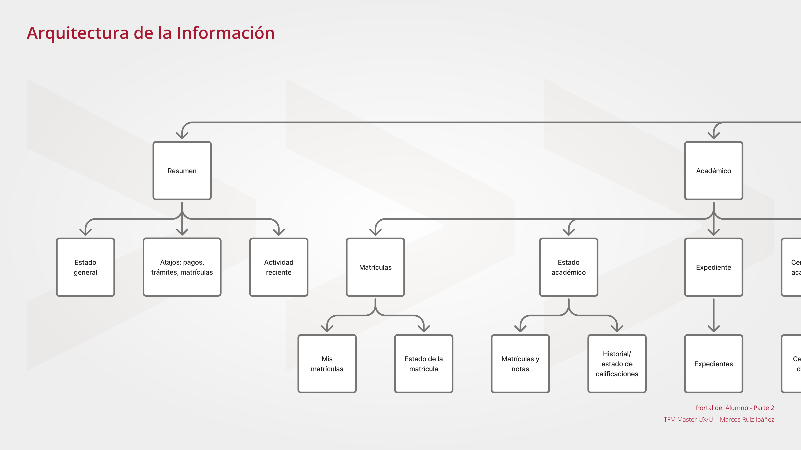
Arquitectura de Información final — 7 bloques organizados por objetivos de uso real
Decisiones clave de arquitectura
| Decisión |
Justificación UX |
| Resumen como punto de entrada |
La Home debe responder a "¿qué tengo pendiente hoy?", no a "¿a dónde quiero ir?". Los usuarios percibían el panel de atajos como launchpad, pero no como guía de acción. |
| Notificaciones como capa global |
El card sorting confirmó que los usuarios interpretan las notificaciones como un sistema transversal. Situarlas como sección independiente rompe el modelo mental. |
| Aula Virtual separada de Académico |
Los usuarios distinguen claramente entre lo administrativo (matrícula, notas oficiales) y lo formativo (Canvas, webinars). Mezclarlos genera confusión cognitiva. |
| Trámites y Documentación agrupados |
El card sorting confirma que los usuarios perciben estas categorías como el mismo "universo administrativo". Separarlas aumenta la fricción. |
| Empleabilidad en primer nivel |
La presencia espontánea del Portal de Empleo en el card sorting confirma que los alumnos dan valor estratégico real a la empleabilidad. No puede ser un submenú. |
14 — Diseño visual
Después, diseñar
Cada decisión visual tiene una justificación funcional. El diseño no es decoración: es la traducción de los insights de investigación en decisiones tangibles.
Layout — Tres capas estructurales
Sidebar izquierdo
Navegación principal persistente. El benchmark y el testing confirman que el sidebar facilita la orientación en plataformas con mucho contenido y permite escalar sin romper la jerarquía.
Header superior
Contexto del usuario, notificaciones y accesos globales. Punto de anclaje visual constante independiente del contenido que esté en el cuerpo central.
Cuerpo central
Grid de 4 columnas con 24px de gutter y 48px de margen lateral. Permite desde grids densos de tarjetas hasta layouts de detalle sin romper la consistencia.
Sistema de color
Decisión clave: el rojo corporativo se reserva exclusivamente para acciones prioritarias. Esto crea un sistema de jerarquía visual clara donde el usuario siempre identifica el "siguiente paso natural" sin necesidad de leer cada elemento.
Sistema tipográfico
SF UI Display — Encabezados
Portal del
Alumno
Carácter institucional, escaneo rápido de secciones y jerarquía visual.
Open Sans — Cuerpo de texto
Alta legibilidad en tamaños pequeños y medianos. Ideal para etiquetas, formularios y contenido académico de alta densidad.
Flujos principales
Flujo 1 — Solicitar un certificado académico
Home
→
Trámites y documentos
→
Nuevo trámite
→
Seleccionar tipo
→
Revisar datos
→
Confirmar
→
Estado "En proceso"
→
Notificación + Descarga
Flujo 2 — Consultar estado académico
Home
→
Académico
→
Estado académico
→
Resumen de asignaturas
→
Filtrar por estado
→
Detalle de asignatura
Flujo 3 — Acceder a un webinar
Home
→
Aula virtual
→
Webinars
→
Buscar / filtrar
→
Seleccionar
→
Reproducir
15 — Prototipado
Del sketch al prototipo funcional
Fase 1 — Baja fidelidad
Sketches en papel
Papel craft para evitar el sesgo visual. 4 variantes de estructura testeadas con usuarios reales. Primer pain point documentado: "¿Dónde está para pedir ayuda?"
Fase 2 — Media fidelidad
Wireframes digitales
A partir de los sketches validados y el card sorting. Layout de 3 capas, jerarquía de secciones y flujos principales definidos. Incorporación de zona de ayuda visible.
Fase 3 — Alta fidelidad
Prototipo funcional
Sistema visual completo en Figma: tipografía, colores, componentes, iconografía y estados interactivos. Artefacto utilizado en el usability testing final.
Pantallas principales prototipadas: Login, Home/Dashboard (dos variantes), Estado académico, Flujo de solicitud de certificado, Webinars con búsqueda y filtros, y Notificaciones como capa global.
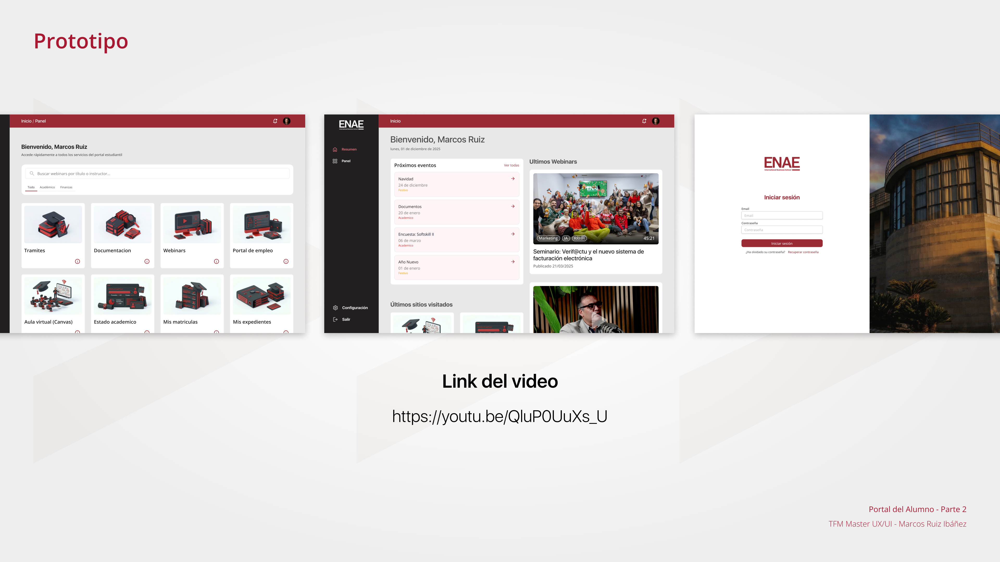
Prototipo de alta fidelidad — Home/Dashboard con panel de bienvenida y accesos rápidos
16 — Testing y hallazgos
Por último, testar y aprender
Se realizaron dos rondas de testing con usuarios reales. El hallazgo más valioso no vino de las tareas completadas, sino de las pausas.
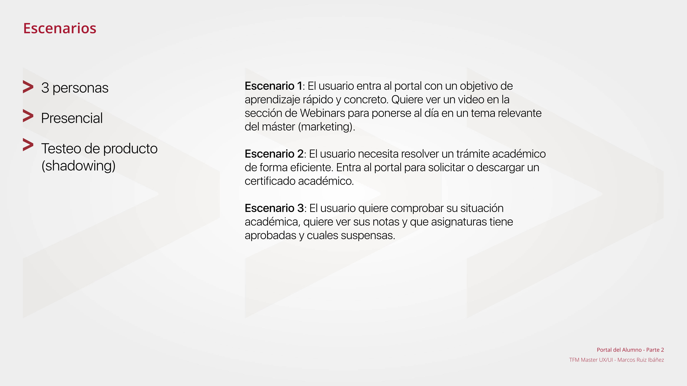
Usability Testing — 3 escenarios con shadowing presencial
Ronda 1
Test de concepto
3 participantes · Formato presencial · Exploración libre con preguntas de orientación sobre los sketches en papel
Ronda 2
Usability Testing con prototipo
3 participantes · Shadowing con 3 escenarios · Registro de tiempo, errores y verbalizaciones espontáneas
Hallazgos por severidad
✅
El portal se percibe como ordenado y con lógica de dashboard clara
Todos los participantes identificaron el propósito del portal sin instrucciones previas, confirmando la claridad del modelo visual propuesto.
✅
Tarea de webinar completada fluidamente en todos los casos
Tasa de éxito del 100% en el escenario 1. La separación entre módulos fue inmediatamente comprendida.
🔴
Crítico: ausencia de zona de ayuda visible
Cuando se preguntó "¿qué harías si no encuentras lo que necesitas?", todos los usuarios hicieron una pausa. El portal no ofrecía un punto de soporte evidente. Este insight reconfiguró la navegación final.
🟠
Cards del panel visualmente muy similares entre sí
Los usuarios debían leer el texto para identificar cada servicio. La iconografía no era suficientemente diferenciada por silueta y metáfora.
🟡
Algunos nombres de sección no describían con suficiente claridad su finalidad
Nomenclatura interna de la universidad usada en lugar de nombres orientados a la tarea del usuario.
Cambios aplicados post-testing
| Cambio |
Qué se hizo |
Por qué |
| Acceso de ayuda persistente |
Punto de soporte visible en sidebar y header, presente en todas las pantallas |
Responde al pain point más crítico detectado: "¿Dónde está para pedir ayuda?" |
| Diferenciación iconográfica |
Revisión de siluetas y metáforas de iconos; sistema de color por categoría |
Eliminar la necesidad de leer el texto para identificar cada servicio |
| Revisión de nomenclatura |
Cada sección renombrada por lo que el alumno puede hacer allí, no por el nombre del departamento |
Reducir la fricción cognitiva al navegar |
| Home orientada a decisiones |
Bloque dominante "Lo más importante de hoy" antes de los accesos directos |
La pregunta que responde la Home cambió de "¿A dónde quieres ir?" a "¿Qué tienes que hacer ahora?" |
17 — Resultados
El resultado: menos buscar, más hacer
Impacto para usuarios
- —Reducción significativa del tiempo para completar trámites administrativos
- —Eliminación de la dependencia del email para gestiones académicas rutinarias
- —Reducción de ansiedad en el onboarding de alumnos internacionales
- —Mejor gestión del tiempo para perfiles que combinan estudio y trabajo
Impacto para negocio
- —Reducción de la carga operativa del equipo administrativo
- —Mejora de la percepción de calidad del servicio educativo
- —Base escalable para IA, chatbot y orientación personalizada
- —Diferenciador competitivo en captación de alumnado internacional
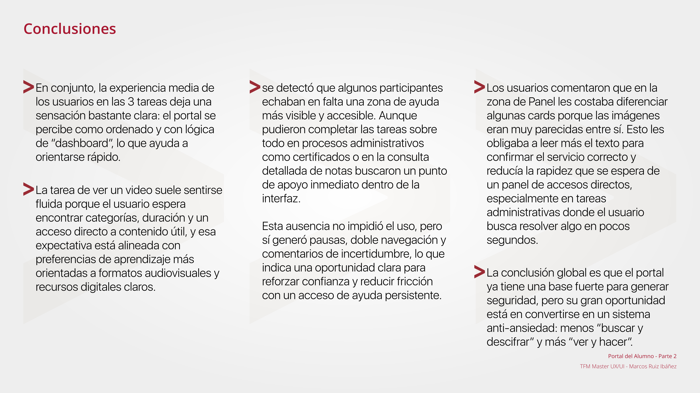
Resultados del Usability Testing — experiencia media de los usuarios en los 3 escenarios
La conclusión global es que el portal ya tiene una base fuerte para generar seguridad. Su gran oportunidad está en convertirse en un sistema anti-ansiedad: menos buscar y descifrar, más ver y hacer.
18 — Reflexión
Qué aprendí
🎯
Diseñar para la emoción, no solo para la tarea
El hallazgo más valioso vino de las entrevistas cualitativas. La dimensión emocional —el miedo a no integrarse, la soledad del alumno internacional— cambió completamente el enfoque del proyecto. Diseñar un portal que reduce ansiedad es diferente a diseñar un portal que organiza información.
🃏
3 personas + 1 mesa + tarjetas = mejor insight que 10 best practices
El card sorting presencial con solo 3 personas fue más revelador que cualquier análisis de benchmark. Las decisiones de separar Aula Virtual de Académico, o de tratar las notificaciones como capa transversal, no salieron de ninguna best practice: salieron de observar cómo tres personas agrupaban tarjetas en una mesa.
⏸
La pausa del usuario dice más que su respuesta
La iteración más importante no fue un cambio de diseño, sino un cambio de pregunta: pasar de "¿puedes encontrar el certificado?" a "¿qué harías si no encuentras lo que necesitas?". Esa segunda pregunta reveló el pain point más crítico de todo el proyecto: la ausencia de un punto de ayuda visible.
Qué mejoraría
| Gap |
Cómo mejorarlo |
| Muestra pequeña (3 participantes) |
5–8 participantes mínimo en testing de usabilidad. Card sorting con Maze u OptimalSort para análisis de dendrograma con mayor volumen. |
| Ausencia del equipo de administración |
Añadir perspectiva Service Design con un Service Blueprint que muestre los flujos del alumno y del personal en paralelo. |
| Métricas definidas ex post |
Establecer KPIs como hipótesis de partida antes de diseñar. Reformular el proceso para mostrar que validan hipótesis, no que describen resultados. |
| Sin exploración alternativa documentada |
Añadir sección "Caminos explorados y descartados" con 2–3 variantes evaluadas y su justificación de rechazo. |
| Ausencia de diseño mobile documentado |
Al menos 3 pantallas clave en formato mobile (Home, Estado académico, Solicitud) con navegación bottom-bar adaptada. |
Próximos pasos
1
Iterar la Home con el enfoque de "decisiones rápidas": bloque de "Lo más importante de hoy" como elemento dominante.
2
Diseñar el sistema de iconografía diferenciada con patrón de color por categoría para resolver el problema de distinción visual en las cards.
3
Desarrollar el flujo de onboarding para alumnos nuevos: el insight de la soledad del primer día merece un módulo propio.
4
Incorporar prototipo mobile con navegación bottom-bar adaptada al contexto móvil.
5
Definir la propuesta de chatbot/IA como canal de ayuda persistente: el insight de "comunicación rápida y moderna" apunta directamente a esta solución.